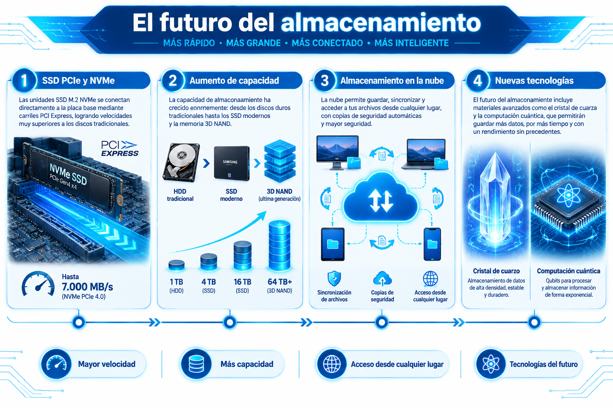

Where data devices and technologies are evolving
For many years, the performance of traditional hard drives and early SSDs was limited by their connection interfaces. New technologies based on PCI Express (PCIe) lanes and the NVMe (Non-Volatile Memory Express) protocol have removed this bottleneck.
These drives connect directly to the motherboard, allowing transfer speeds that greatly exceed the limits of traditional SATA ports, significantly accelerating operating system boot times and the loading of demanding applications.
Miniaturization and three-dimensional memory architectures, such as multi-layer 3D NAND flash memory, make it possible to store enormous amounts of data in increasingly smaller spaces.
While mechanical hard drives (HDDs) continue to evolve gradually to provide large storage volumes at a low cost per terabyte in servers, solid-state drives keep becoming more affordable while offering larger capacities for home users.
The concept of storing data locally is increasingly complemented by cloud storage services. Remote servers accessed through the Internet allow users to synchronize and back up information from virtually any device and location.
Although physical storage devices remain essential due to their speed, privacy, and independence from Internet connectivity, cloud storage has become a fundamental pillar of modern data storage.
Research continues to advance. Among the most promising experimental technologies are high-density optical storage systems based on quartz crystals, capable of preserving data for thousands of years, as well as advances in quantum-computing-related memory technologies.
The main goal of these developments is to achieve faster access speeds, near-total resistance to wear, and extremely low energy consumption.
